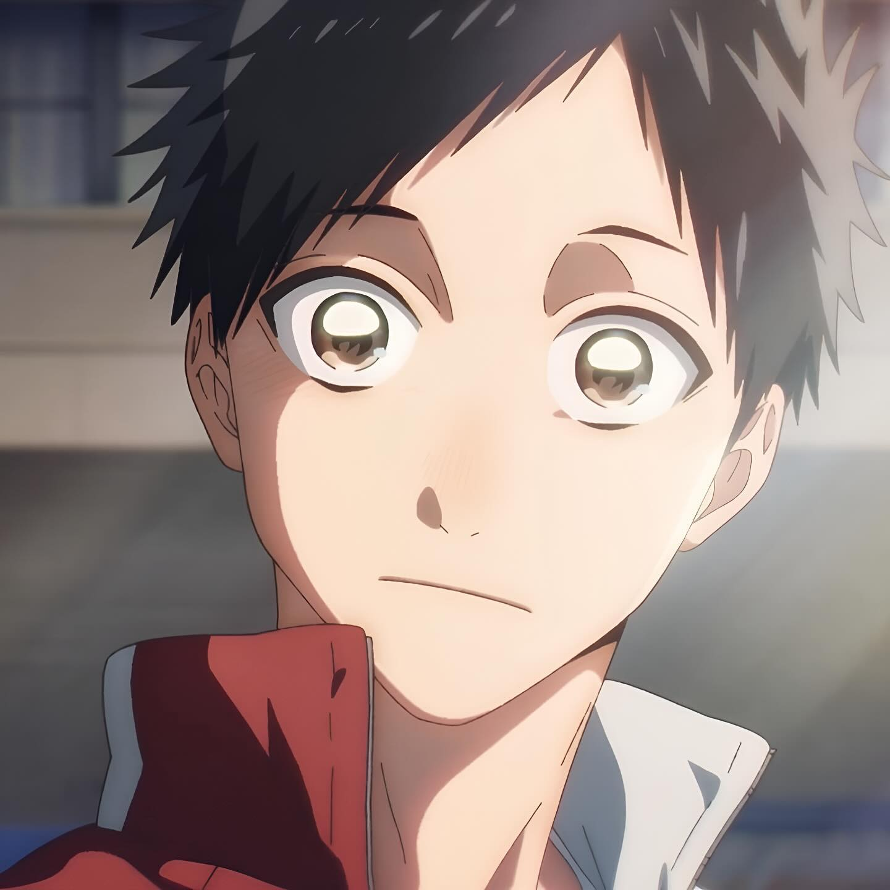
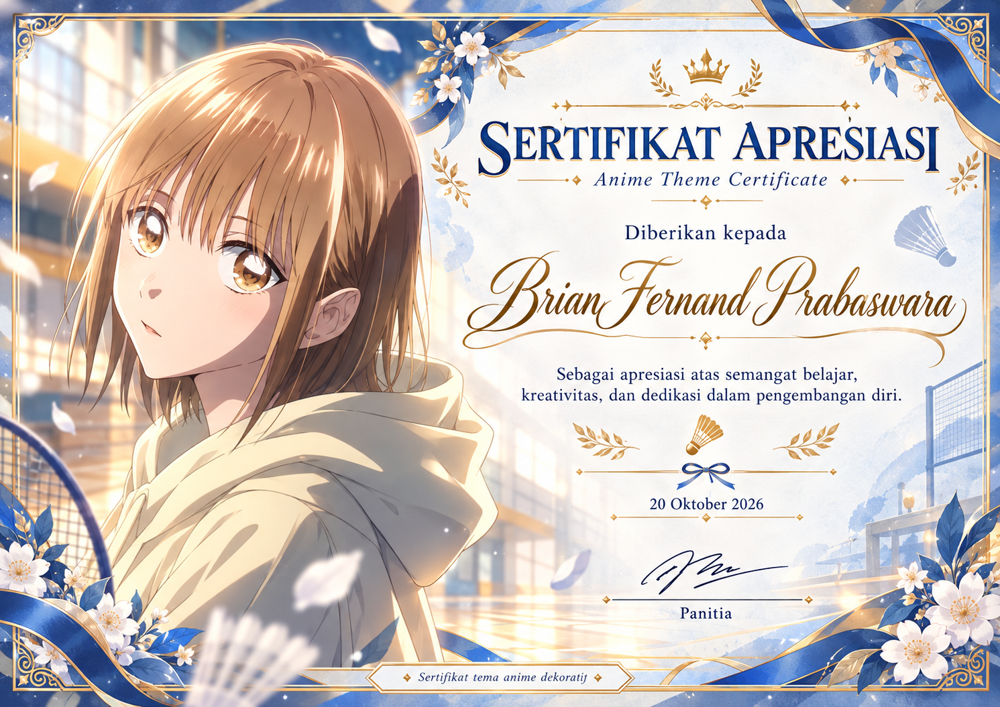
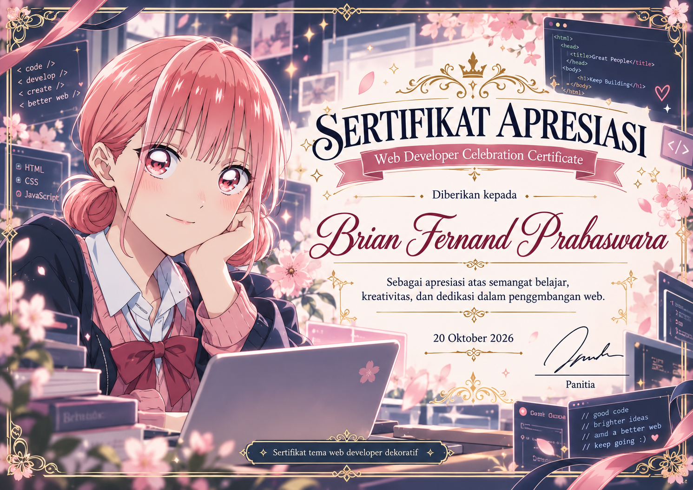
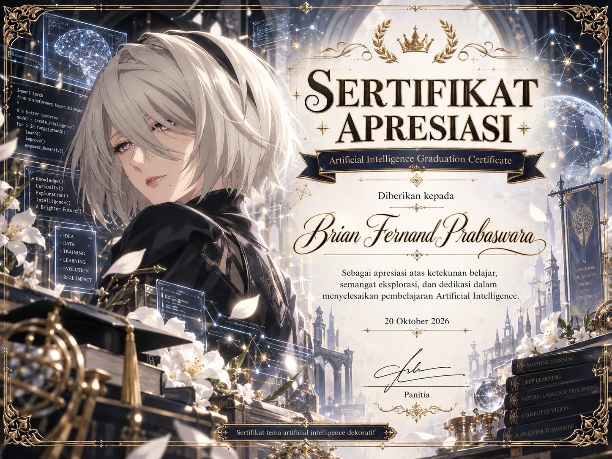
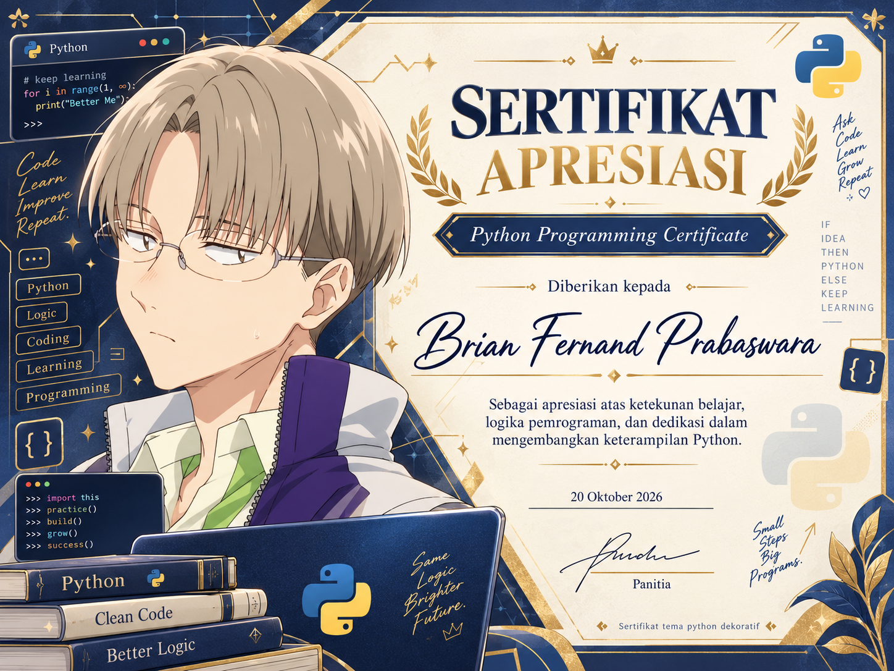

PENDIDIKAN TINGGI
Universitas Dian Nuswantoro
Program Studi Sistem Informasi — S1
Mempelajari dasar-dasar sistem informasi, logika pemrograman, dan cara membangun solusi digital yang bermanfaat.
Halo, perkenalkan!
Mahasiswa Sistem Informasi yang antusias mempelajari pemrograman web, mengembangkan ide digital, dan menghadirkan pengalaman pengguna yang sederhana serta nyaman.

Halo! Saya Brian Fernand Prabaswara, mahasiswa Sistem Informasi di Universitas Dian Nuswantoro (UDINUS). Saya tertarik dengan bagaimana teknologi membantu menyelesaikan masalah di kehidupan sehari-hari.
Melalui pembelajaran HTML, CSS, dan konsep antarmuka, saya terus berlatih menciptakan website yang rapi, mudah digunakan, dan dapat tampil dengan baik di berbagai ukuran layar.
Proses belajar bukan hanya tentang teori, tetapi juga praktik dan mencoba hal-hal baru.
PENDIDIKAN TINGGI
Program Studi Sistem Informasi — S1
Mempelajari dasar-dasar sistem informasi, logika pemrograman, dan cara membangun solusi digital yang bermanfaat.
AKTIVITAS PEMBELAJARAN
Melatih pemahaman HTML, CSS, dan penerapan layout modern secara bertahap serta mempelajari bahasa Pemrograman lain.
PENGEMBANGAN DIRI
Mencari referensi desain, mempelajari konsep baru, dan mengembangkan kreativitas.
Saya terus membangun fondasi pengetahuan untuk menjadi developer yang lebih baik.
Menyusun struktur halaman dengan HTML dan membuat tampilan yang menarik melalui CSS.
Mempelajari Flexbox, Grid, dan media queries supaya halaman nyaman dibuka di berbagai perangkat.
Menggabungkan pemikiran sistematis, analisis kebutuhan, dan teknologi untuk menjawab kebutuhan pengguna.
Daftar kegiatan di bawah diambil dari website Tugas 1 dan perlu disesuaikan dengan data asli sebelum publikasi.
| No. | Kegiatan | Pencapaian | Tahun |
|---|---|---|---|
| 01 | Lomba Web Design NasionalKompetisi desain website | Juara 1 | 2024 |
| 02 | Bug BountyKompetisi Mencari Bug pada Web maupun Aplikasi | Finalis | 2025 |
| 03 | Artificial IntelegenceMachine Learning | Peserta Terbaik | 2025 |
Empat tempat untuk menampilkan sertifikat yang saya miliki.




Terima kasih sudah mengunjungi website profil saya. Senang bisa berbagi perjalanan belajar dan ketertarikan di dunia teknologi.